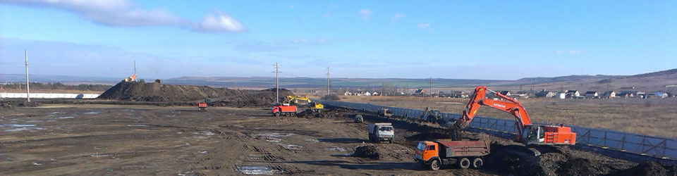
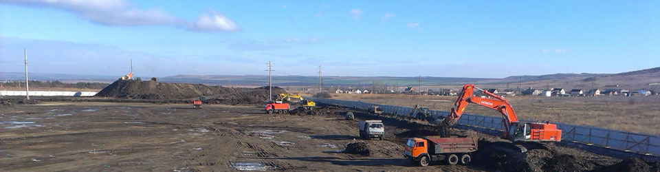

Геодезические работы.
Геодезическое сопровождение строительства это:Кроме этого современными методами инженерной геодезии можно решить еще целый ряд прикладных строительных задач:Топографическая съемкаВажнейшая часть работ при инженерно-геодезических изысканиях. Топографическая съемка это целый комплекс топографических работ, результатом которых служат составленные топографические карты и планы. Топографическая съемка выполняется на местности, затем идёт обработка данных, полученных в результате топосъемки. Топографическая съемка подробно отражает рельеф местности. Топосъемка фиксирует на требуемом участке строения, объекты коммуникаций, при необходимости - зеленые насаждения. Количество и состав отображаемой информации на топографическом плане может отличаться в различных вариантах, так как эта информация зависит от целей топосъемки. Геодезическая экспертизаГеодезическая экспертиза или по-другому геодезический аудит это комплекс, мер направленных на определение правильности ранее выполненных работ на объекте и соответствия полученных результатов и исходных данных. Многие организации и производства сталкиваются с проблемой корректности и правдивости исполнительной окументации. Нашим клиентам мы предлагаем выполнение независимой экспертной оценки в отношении соответствия истине геодезических исполнительных актов предоставленных смежными организациями. Геодезическая экспертиза (геодезический аудит) часто применяется при проведении судебных разбирательств затрагивающих земельный вопрос (установление границ землепользований, установление и закрепление на местности охранных зон). В качестве независимого эксперта, судом привлекаются организации имеющие лицензии на осуществление геодезической деятельности. Разовые разбивочные работыРазовые выезды специалиста на объект - если в процессе строительства Вам необходимы услуги геодезиста, но постоянно специалист на объекте Вам не нужен. В таком случае возможны выезды нашего специалиста на объект, например, один раз в неделю. Возможность привлечения специалиста без его включения в свой штат позволит сократить издержки и повысить качество осуществляемой работы. |
Геодезический мониторингГеодезический мониторинг своей первоочередной задачей ставит наблюдение за деформациями и выявление критических отклонений при строительстве зданий и сооружений различного назначения. Качественный и своевременный мониторинг позволяет установить причины возникновения критических отклонений, определить дальнейшую динамику развития деформаций выработать и принять меры по дальнейшему развитию событий. Современные тенденции в строительстве, такие как увеличение этажности здания, уплотнение городской застройки, уменьшение площади строительных площадок, применение подземного строительства, увеличение плотности инженерных коммуникаций однозначно ведет к увеличению негативного техногенного воздействия на уже возведенные объекты, находящиеся в прилегающих зонах. Учитывая все вышесказанное особое значение, приобретает проблема контроля технического состояния здания с целью предупреждения возможной аварийной ситуации на самом раннем этапе. Данный контроль технического состояния объекта должен носить систематический характер и позволять делать необходимые инженерные решения на основе обширной выборки. Иными словами мониторинг должен выявлять соответствие фактической жесткости, прочности, устойчивости основных конструкций нормативным требованиям. На практике наиболее часто встречается геодезический мониторинг вертикальных отклонений ( т.е. наблюдение за просадкой здания) При таких наблюдениях в основание здания закладываются осадочные марки, высотное положение которых, в дальнейшем, определяется с помощью высокоточного нивелирования , проводимого с определенной периодичностью. Разность высотных отметок марок позволяет судить о таких параметрах, как абсолютная величина деформации и скорость изменения деформационного движения. Для получения полной картины происходящего на объекте параллельно ведется геодезический мониторинг трещин фасадов зданий. Трещины имеют свойство уменьшать общую прочность конструкции, причем в отдельных случаях здание может быть разделено ими на отдельные не связанные друг с другом блоки, что может привести к обрушению здания и дополнительным работам по устранению недостатков. Вообще на практике часто проводится комплекс различных работ по мониторингу. Инженеры на практике пытаются определить состояние строящегося объекта, его воздействие на атмосферную, геологическую и гидрологическую среду в процессе строительства или реставрации, что в дальнейшем будет способствовать эффективной и длительной эксплуатации. На практике еще достаточно часто встречается геодезические измерения горизонтальных смещений. Или если сказать иначе это мониторинг, направленный на выявление кренов и сдвигов. В основном такие работы проводятся в потенциально опасном районе и при строительстве сооружений башенного типа. Такие измерения проводятся оборудованием с повышенной угловой точностью. Все результаты объединяются в отчете или техническом заключении, там описываются сценарии развития событий и даются инженерные рекомендации по предотвращению неблагоприятных ситуаций. |
Инженерно-геодезические изыскания.Инженерно геодезические и инженерно геологические изыскания являются незаметной, но необходимой частью для начала строительных работ, которые должны быть выполнены вне зависимости от размеров объекта строительства. Как правило, инженерно геодезические изыскания начинают проводить еще до создания архитектурного проекта и проекта КЖ. Результаты инженерно-геологических изысканий прямо влияют на возможность начать строительство в данном районе и получить всю разрешительную документацию. Работы по геологии объекта определяют такие параметры близость грунтовых вод, наличие пустот и вероятность оползней. На основании заключения сделанного специалистами по изысканиям могут быть изменены такие параметры будущего проекта, как толщина фундамента и толщина стен. На основании же геодезических исследований определяют будущие размеры объекта и обозначают путь прокладки подземных коммуникаций. Согласно СНиП 11-02-96 геодезические изыскания, во время строительства и эксплуатации строения, включают в себя следующие виды работ: создание геодезической основы,вынос в натуру основных осей здания, разбивочные работы в процессе строительства, геодезический контроль геометрических параметров сооружения, исполнительная геодезическая съемка в ходе работ, контрольная геодезическая съемка готовых элементов, наблюдение за деформациями здания и сооружения, геодезические работы при монтаже оборудования, работы по определению скрытых подземных коммуникаций, изготовление гео подосновы или топографического плана на участке работ в масштабе 1:500. Результатам геодезических изысканий является составление подробного отчета о проделанной работе. Кроме этого для подготовки исходно-разрешительной документации, при строительстве объектов различного назначения, проводятся инженерно-экологические изыскания. Экологические исследования проводятся для проведения земляных работ, для определения класса опасности отходов , а также на этапе начала работ и момента сдачи в эксплуатацию. . Как правило, экологические изыскания в строительстве осуществляются на основе данных мониторинга состояния почвы, воды и воздуха. |
Съемка надземных и подземных коммуникаций.К трассированию линейных сооружений относятся работы по проектированию направления и профиля различных линейных сооружений, будь то трасса дороги, ЛЭП, линии связи, газопровод, водопровод, теплотрассы и многое другое. Наша инжиниринговая фирма занимается любыми геодезическими работами при строительстве линейных объектов В целях снижения затрат, при строительстве дорог, геодезисты стремятся проложить трассу по оптимальному маршруту. Это делает трассу удобной при движении. и сокращает объем будущих работ. Инженерно геодезические изыскания линейных сооружений включают в себя создание планового и высотного основания трассы. Современные технические средства позволяют закладывать репера в мировых системах координат без проведения длительных работ и идти сразу в ногу со строительством. В процессе трассирования геодезист должен учитывать возможные препятствия на кратчайшем маршруте линейного сооружения, а также геологические и гидрологические особенности местности. Ландшафтный дизайн и оформление участков |